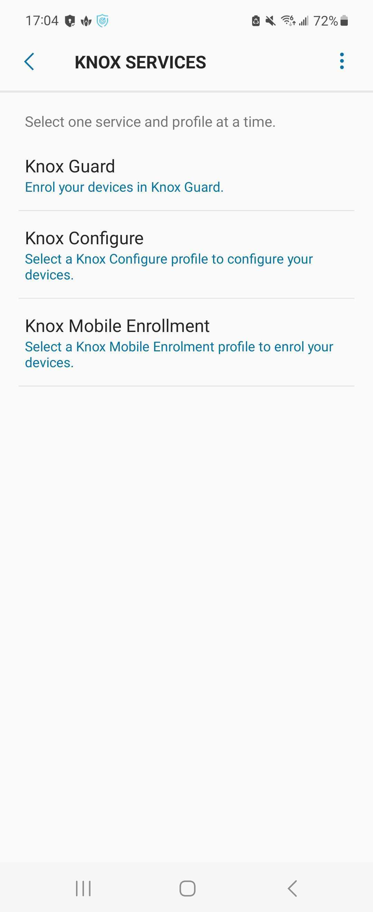
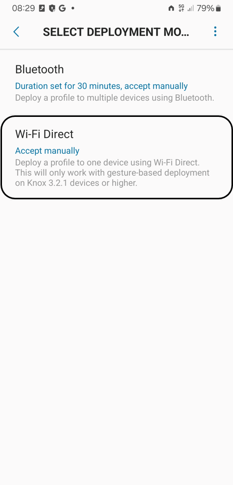

Use the Knox Deployment app
Last updated October 21st, 2024
The Knox Deployment app is a mobile application available from Google Play that is uniquely designed to help streamline the enterprise deployment of Samsung phones and tablets running Knox 2.8 or higher.
About the Knox Deployment app
The Knox Deployment app allows you to enroll devices without a reseller, one device at a time. This app simplifies device enrollment by allowing you to use one device to enroll a different device. Here, the device on which you install the app becomes the primary host device, and the other device that you enroll using the app on the primary device becomes the secondary device. Once enrolled, you can easily locate the devices within your console. You can also test other Knox cloud services prior to contacting your reseller for bulk device upload.
Installing and using the Knox Deployment app on the primary device doesn’t affect the device. It only broadcasts the profile to devices that are in close physical proximity to the primary device. Hence, only devices within physical proximity of the primary device — which contains the Knox Deployment app installed — can be enrolled. Furthermore, device users using a personal Samsung account for other services, such as Samsung Health and SmartThings, won’t be able to sign in to the Knox Deployment app on the same device with their enterprise account. They must first sign out of their personal account.
The Knox Deployment app supports the following ways of enrolling devices:
-
Bluetooth enrollment — Works when the secondary device is in the vicinity of the primary device. The secondary device connects to the primary device wirelessly through Bluetooth without a PIN or password and is then added to the Knox Mobile Enrollment console.
-
Wi-Fi Direct enrollment — Wi-Fi Direct supported devices can connect directly to each other through a WLAN, without joining a traditional wireless network or Wi-Fi hotspot. Once enabled, the device automatically scans for other supported Wi-Fi direct devices. Once discovered, you can select specific devices for transferring the enrollment data.
Prerequisites
To correctly use the Knox Deployment app, you must:
-
Already have a Samsung Knox account with at least one profile already configured.
-
Ensure that your Samsung devices support Bluetooth or Wi-Fi Direct and are secured by Knox. Currently, the Knox Deployment app doesn’t support the enrollment of Samsung devices without Samsung Knox. See the list of supported devices to determine compatibility.
-
Ensure you have the appropriate license to enroll devices through the Knox Admin Portal.
-
Knox Mobile Enrollment profiles with standard settings don’t require a license. However, you must have a Knox Suite license to use advanced settings for a profile. See Advanced profile settings for more information.
-
Knox Configure and Knox Guard require a license.
-
-
Install the Knox Deployment app on the primary device, and sign in using your Samsung Knox credentials.
-
Configure the app permissions once you launch the app.
-
Ensure the device you’re enrolling isn’t already enrolled into a Knox cloud service.
-
The Knox Deployment app is only designed for use with one Knox cloud service at a time. Once added to a Knox cloud service, such as Knox Mobile Enrollment, Knox Guard, or Knox Configure, you can manage the device added through the Knox Deployment app directly from the Knox Admin Portal.
-
To avoid issues while enrolling your device with the Knox Deployment App, ensure that it’s not enrolled in any other Knox cloud service. See the FAQ about the Knox Deployment app being enrolled to only one Knox cloud service for more information.
-
Using the Knox Deployment app
To get started with using the Knox Deployment app, you must:
-
Tap Sign in once the Knox Deployment app launches on the device.
If the Knox Deployment app is already running on the device, the initial screen isn’t displayed, and the application displays the sign-in screen.
-
Enter your Knox Admin Portal username and password. Note that you’ll have to set up two-factor authentication. For more information, see the two-step verification FAQs.
Once you have successfully signed in to the Knox Deployment app, the Welcome screen displays options for selecting a profile and a deployment mode.
Profile selection
Before adding devices to a Knox cloud service through the Knox Deployment app:
-
Select a Knox cloud service in the Knox services menu.

-
Then, select a profile of your choice from the list shown. The profile must be associated with this service in your Samsung Knox account. These profiles are listed as follows:
-
The most recently added profiles are displayed first within their respective categories.
-
Each listed profile briefly describes its relevance to a particular device enrollment option.
-
If needed, tap the Search icon to search existing profiles. Note that this search function locates only filtered profiles.
-
If no profiles are available, you must first create a profile in the Knox Admin Portal.
-
-
Once you select a profile, it is displayed upon subsequent logins. So, to change the profile you selected, tap Knox services and choose a different service and one of its associated profiles.
-
Then, deploy the selected profile.
Select a deployment mode
-
To change the existing deployment mode, simply tap Deployment mode and select either Bluetooth or Wi-Fi Direct deployment.
-
Once you’re ready to deploy, tap Start deployment to initiate deployment as per the Deployment mode you selected.
The profile is now ready for either Bluetooth or Wi-Fi Direct deployment.
Bluetooth deployment
To enroll and deploy devices through bluetooth:
-
Navigate to the Select deployment mode screen and select Bluetooth as the device deployment mode.

-
Set the Bluetooth duration to either 30 minutes, 1 hour, 3 hours, 5 hours, or 8 hours. Tap OK to save the update.
- Bluetooth duration is the deployment activation period for device user devices after they receive the profile from your primary device. Once the set duration expires, devices can’t enroll with the Knox Deployment app, and the process must be repeated to continue the enrollment of other required devices.
- Tap Accept automatically to automatically accept pairing requests from enrolling devices. If selected, the pairing dialogue is displayed neither on the primary device nor the receiving device.
- The device must remain on for the entire Bluetooth duration.
-
Boot the secondary device that you’re adding through the Knox Deployment app.
-
Draw a plus-sign (+) gesture on the device’s Welcome screen to initiate the deployment. This step allows you to skip the Setup wizard.
The device must be running Knox 3.2 or higher. Additionally, Wi-Fi credentials passed to the device are for WEP, WPA and WPA2 Wi-Fi security types.
-
On the Knox Deployment app screen, tap Start deployment to initiate the Bluetooth duration interval you configured in step 2.
- As long as the Bluetooth duration is still active, and the app is running actively on the device, the device display won’t time out.
- Bluetooth and the device location must be turned on and must run actively on the device for successful deployment.
-
The device user then taps Finish deployment to complete the enrollment.
Wi-Fi Direct deployment
To initiate deployment, draw a plus-sign (+) gesture on the primary device’s Welcome screen. This step allows you to skip the Setup wizard. Then, to enroll and deploy devices using Wi-Fi Direct:
-
Navigate to the Select deployment mode screen and select Wi-Fi Direct as the device deployment mode.

-
Once Wi-Fi Direct is selected as the deployment mode, specify whether the Wi-Fi Direct connection is automatic or manual:
-
Accept manually — Requires a device user to enter a system-generated PIN every time a connection is requested from an enrolling device. This is the default setting.
-
Accept automatically — Automatically accept connection requests from enrolling devices.
-
Accept connection requests manually
A Wi-Fi Direct manual connection requires a PIN be entered correctly before the expiration of a timer.
To establish a manual Wi-Fi Direct connection:
-
Tap Accept manually on the Select Wi-Fi Direct screen when prompted.
-
Note the PIN that is displayed on the screen to proceed with the manual Wi-Fi Direct connection.
-
Tap Connect before the countdown expires. An Accept sharing request dialog prompts you to enter the required PIN before the countdown timer expires.
-
Enter the PIN and tap Accept. This enables the listed primary device to share enrollment information through the newly established Wi-Fi Direct connection.
-
Tap Finish deployment on the primary device to finish enrollment.
Accept connection requests automatically
To establish an automatic Wi-Fi Direct connection:
-
Tap Accept automatically from the Select Wi-Fi Direct screen when prompted.
-
Tap Connect before the countdown expires to initiate a Wi-Fi Direct connection with the primary device. This enables the listed device to share enrollment information through the newly established Wi-Fi Direct connection.
-
Tap Finish deployment on the primary device to finish enrollment.
On this page
Is this page helpful?